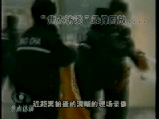
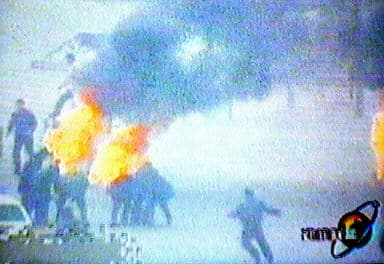
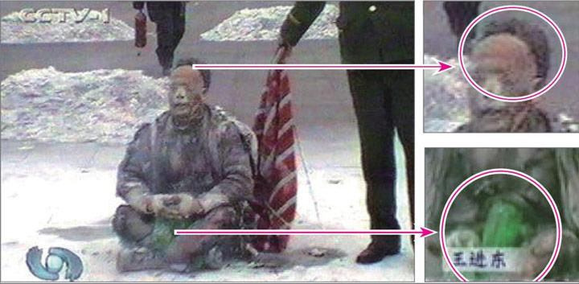
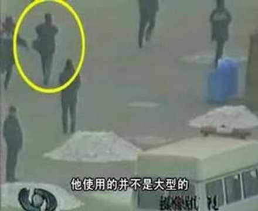
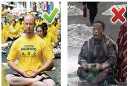
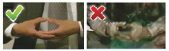
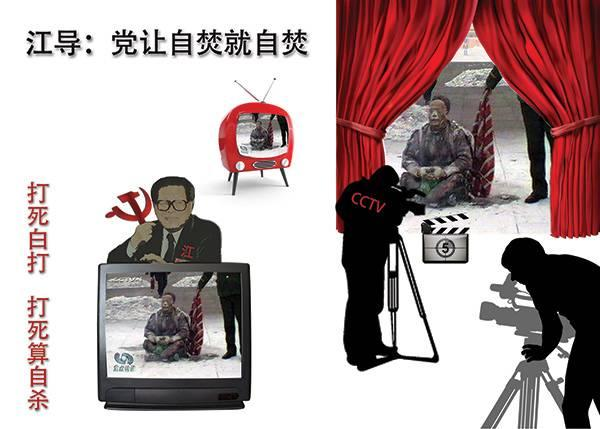
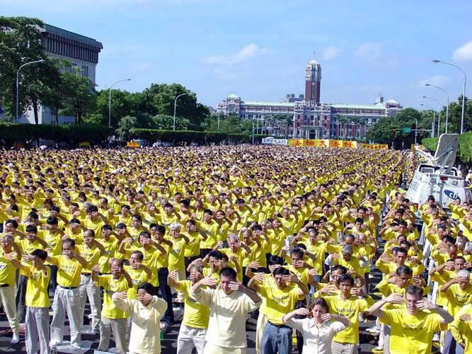
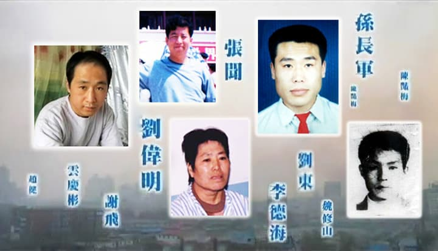

如此迫不及待，已经暴露了这并非突发事件，而是一场准备充分的阴谋——假如真是突发事件，是根本来不及准备的。
当局的准备不仅仅是这些，央视紧跟着推出了攻击法轮功的“自焚新闻”、“焦点访谈”，而且强制全国各界、各企事业单位观看，反复“学习”。然而事与愿违的是， 反复播放的录像却暴露了越来越多的破绽，显出这是一场骗局。
法轮功明确指出：炼功人不能杀生，自杀有罪
法轮修炼大法是由李洪志先生创编的佛家上乘修炼大法。在李洪志大师的著作《转法轮》中明确指出：“炼功人不能杀生”，李洪志先生还在 《悉尼法会讲法》中指出：“自杀是有罪的。” 真正的法轮功学员不会去自焚。
自焚伪案疑点：
◎女主角被当场灭口？
◎天安门警察背着灭火器巡逻？
澳洲《时代报》（The Age）2004年10月16日的报道对央视的自焚录像做出强烈质疑：“警方事先不知情，却在90秒内，携带大量消防设备出现在画面中。”
◎衣服烧烂，头发却耐火？
警察晃着灭火毯等镜头，棉衣裤子烧烂，头发还完好，火烧后盛着汽油的塑料瓶完好翠绿。央视女记者承认自焚“摆拍”。
◎谁是画面外的摄影师？
图中的男子在军警间从容拍摄。国际社会质疑：央视自焚录像有远景、移动拍摄的近景，还有多个自焚者在不同位置的特写，并且录下了声音，显然摄影师做好了准备才能做到的专业拍摄。
◎自焚的王进东是法轮功学员吗？
自称“老学员”的王进东竟然不会双盘腿
王进东的大拇指不是法轮功的正确动作——指尖轻轻接触，而是错误的上下重叠。
国际教育发展组织：该事件是由政府一手导演的
2001年8月14日，在联合国倡导和保护人权附属委员会第53届会议上，天安门自焚案被当场揭穿。国际教育发展组织（IED）发言说：“我们的调查表明，真正残害生命的恰恰是中共当局……我们得到了一份该事件（天安门自焚案）的录像片，并从中得出结论，该事件是由这个政府一手导演的。”面对确凿证据，中共代表团哑口无言，没有辩辞。该声明已被联合国备案。
法轮功禁止杀生和自杀
法轮功是上乘佛家修炼大法，明文禁止杀生和自杀。任何以自杀、杀生行为诬陷、诋毁法轮功的人，都不敢让人系统地、不带任何观念地、静心地阅读法轮功原著，特别是《转法轮》一书，也不敢让人亲身体验法轮功的功法，因为坏人也知道：很多人都是有良知的，看见真相就不愿再相信谎言。
华盛顿邮报：自焚的火焰点燃中国的黑幕
在自焚事件两周后，华盛顿邮报记者菲力普•潘发表《Human Fire Ignites Chinese Mystery》（自焚的火焰点燃中国的黑幕）的调查报道，该记者到自焚者之一的刘春玲的居住地开封市采访，刘的邻居告诉记者：“没有人曾看到过她炼法轮功。”
法新社：中国禁止烧伤者被家人探视
法新社北京2001年2月9日消息：中国禁止五名在天安门广场自焚人员的家属去医院探视他们，伤者中包括一个12岁的女孩，他们都仍生命垂危。
刘思影的奶奶星期五从她河南省中部的家中通过电话告诉法新社，这个女孩的所有亲属都被禁止去北京探视她。“当局说谁也不能见她，”这位老大妈不安地说。“他们命令我不得接受任何采访…我只能说这些。我必须撂电话了，再见。”
突破封锁的先驱者
2002年3月5日,《是自焚还是骗局》等真相电视片在长春有线电视播出,长春沸腾了! 震惊的人们纷纷电话告诉亲友同事，让他们打开电视看真相——原来天安门自焚是假的！原来对法轮功的报道是栽赃啊，原来国外都知道法轮功好啊……
这次成功的电视插播,是大陆有线电视网络争取自由、传播真相的杰作，民众都站在了正义一边。江泽民听到之后,怒不可遏地发出密令“杀无赦”！警方开始疯狂地在全城大搜捕。约 5000 名法轮功学员在长春被抓了,不计其数的人被迫流离失所,参与长春插播事件的18名法轮功学员,侯明凯在派出所被打死,15人被非法判刑4至20年(至今8人已被酷刑折磨致死),另2人失踪。
-文章内容选自 明慧网，更多内容请访问 minghui.org
主页 上级目录